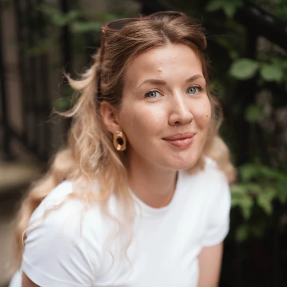

Pašvērtējums
Iekšējais kritiķis un veselā pieaugušā balss
Psiholoģe · Rīga
Reizēm tās ir trīs, reizēm trīsdesmit konsultācijas. Reizēm mēneši un reizēm gadi. Kad cilvēks pirmo reizi pasaka “es apstājos un padomāju, pirms…”, kad pēc garas krīzes atnāk miera mirklis. Tās ir mazās un lielās uzvaras.
konsultācijas, lekcijas un grupas
Par ko runājam
Nav noslēpums, ka arī stiprākie var izdegt. Un nav jāgaida, līdz kļūst pavisam grūti.
Pašvērtējums
Iekšējais kritiķis un veselā pieaugušā balss
Izdegšana
Kad atpūta vairs nelīdz un bilde neliekas kopā
Piesaistes stili
Trauksmainā, izvairīgā un drošā piesaiste
Trauksme un stress
Elpošanas un relaksācijas tehnikas, kas nomierina nervu sistēmu
Attiecības
Sarkanie karogi un savu vajadzību izteikšana
Bailes
Atbalsts cilvēkos un iekšējais spēks izturēt pirmo reizi
Pakalpojumi
Saruna par to, kas Tev šobrīd ir svarīgākais. Cik reižu būs vajadzīgs, izlem Tu pats.
Šeit var ielikt norises veidu, ilgumu un cenu.
Psiholoģijas tēmas skolām, komandām un organizācijām saprotamā valodā, bez liekas teorijas.
Šeit var ielikt tēmu sarakstu un nosacījumus.
Grupa, kurā kopā stiprinām apzinātību, samazinām ekrāna laiku un veicinām prieku un motivāciju. Vietu skaits ierobežots, lai grupa paliktu neliela.
Šeit var ielikt nākamās grupas datumus un pieteikšanos.
Meditācija, kustība, sevis izpēte drošā vidē un dalīšanās. Kopā ar fizioterapeitu, ar iespēju aprunāties individuāli pēc pasākuma.
Šeit var ielikt nākamā retrīta datumu un vietu.
“Jā, tas ir darbs. Bet tās ir arī cilvēcīgas rūpes par kādu, kurš ir daļa no dzīves ceļa.”

Par mani
Psiholoģiju studēju Latvijas Universitātē, maģistra grādu klīniskajā psiholoģijā ieguvu Bonnas universitātē. Strādāju Rīgā: individuāli, kā arī vadu lekcijas, seminārus un grupas.
Pieteikšanās
Nav jāzina, ar ko sākt, un nav jāformulē skaisti. Pietiek ar dažiem teikumiem par to, kas Tevi nodarbina.
RakstītŠeit var ielikt saziņas veidu: e-pastu, tālruni vai pieteikšanās formu.